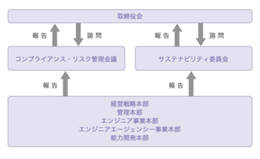
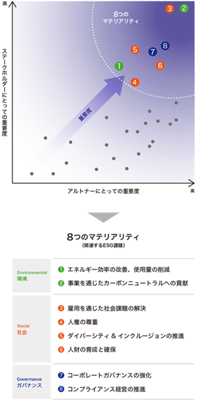

当社の経営方針、経営環境及び対処すべき課題等は、次のとおりであります。
なお、文中の将来に関する事項は、当事業年度末現在において当社が判断したものであります。
(1）経営方針
当社は、『エンジニアサポートカンパニー』という経営理念に基づき、顧客企業の持続的な成長に貢献するテクニカル・パートナーとして活動しております。永きにわたるこの基本姿勢は、多くの信頼と実績を築き上げ、業界のパイオニアとして確固たる地位を確立いたしました。
これからも、顧客企業、株主、従業員をはじめ、すべての社会の皆様からご支持、ご賛同いただける経営を推進し企業価値の拡大に努めてまいります。
(2）経営戦略等
（中期経営計画の基本方針）
『持続的成長および次世代成長のための基盤を構築する』
『Make Value for 2022 to 2024』
（中期経営計画の基本施策）
① セグメント戦略の推進
・セグメント別戦略の構築（採用・教育・配属・制度）
・セグメント別マーケットへの対応の確立
・新たな専門技術領域の開拓・模索
② 多種多様な人財活用の推進
・シニア・女性・外国人労働者（留学生）の人財活用
・協力会社の活用・組織化（請負・受託体制の確立）
(3）経営上の目標の達成状況を判断するための客観的な指標等
当社の主たる事業である技術者派遣事業においては、稼働人員（技術者数×稼働率）×技術者単価×労働工数で算出される金額を売上高として、顧客企業に配属中の技術者の労務費等を売上原価として、社内にて教育研修（待機）中の技術者の労務費、スタッフ職の労務費等を販売管理費として、計上しております。
当社は、技術者数、稼働率、技術者単価を重要な経営指標と考え、更なる向上に努めてまいります。
(4）経営環境
当事業年度におけるわが国経済は、アフターコロナの需要拡大に伴い、本格回復に向かっております。当社の主要顧客である自動車関連メーカー、半導体製造装置関連メーカーを含む、あらゆる業種において、旺盛な開発意欲が継続しており、当社への技術者要請が活発でした。
先行きについては、2024年１月１日に発生した令和６年能登半島地震の経済に与える影響について、注視してまいります。2025年１月期の市場環境に関して、アフターコロナに伴う本格回復は加速し、当社の戦略重点顧客である自動車関連メーカー、半導体製造装置関連メーカーは、さらに開発スピードを高めていくと予測しております。このような市場環境を背景に、当社への技術者要請は、引き続き、旺盛であると予測しております。
(5）優先的に対処すべき事業上及び財務上の課題
当社の主要事業である技術者派遣事業は、採用、教育、営業、サポートというサイクルで構成されております。今後の事業拡大のため、当社が対処すべき課題は、以下のとおりであります。
（採用について）
当社の事業拡大のためには、優秀な技術者の確保・増員が必須要件と捉えています。したがって、採用基準の改善、採用機会の確保、多種多様な人財の採用、技術者の技術領域別・業務領域別構成の最適化、新卒採用・キャリア採用の構成の最適化により、市場ニーズに合致した質の高い人財の確保に努めてまいります。
また、新卒採用については、学生に対して会社説明会、面接等をWebや対面で実施し、選考参加者の確保に努め、定期的に大学等及び内定者に細かいフォローを行うとともに、内定者懇親会等の開催により、内定者の入社率向上に努めてまいります。
（教育について）
当社は、長年積み重ねた経験により構築した一般・社外実務・基礎・応用・キャリア研修の実施により、技術者のスキルアップに努めてまいります。
また、全社員向けに能力開発セミナー、管理職者向けに人間づくり研修の開催により、技術力・人間力の向上に努めてまいります。
（営業について）
当社は、新規開拓営業力の強化を図り、Web会議ツールも活用し、顧客ニーズに応じた技術者の人選、チーム派遣、請負・受託の編成等の提案により、取引先の確保・拡大に努めてまいります。
また、顧客企業との交渉に努め、適切な技術者の配置の実施により、技術者単価の増額等の取引条件の向上に努めてまいります。
（サポートについて）
当社は、技術者とのオンラインを含めた定期的な面談を通じ、希望・実情に応じた指導・アドバイス、専属カウンセラーのメンタルヘルスケアにより、モチベーション向上をサポートし、定着率向上に努めてまいります。
当社のサステナビリティに関する考え方及び取組は、次のとおりであります。
なお、文中の将来に関する事項は、当事業年度末現在において当社が判断したものであります。
(1）サステナビリティ全般
当社は、経営理念である「エンジニアサポートカンパニー。私達は技術者の夢をサポートします」に基づき、エンジニアの成長と自己実現をサポートし、企業価値の最大化を図るとともに、事業活動を通じて社会的課題の解決に貢献し、持続的成長及び次世代成長の基盤構築を進めていくことを、サステナビリティ活動推進の基本的考え方としております。この考え方に基づき、下記のとおり「サステナビリティ基本方針」を定めるほか、人権方針や調達方針などを制定し、企業活動の規律と方向性の明確化を図っております。また、ステークホルダーの関心や社会課題を認識するとともに、当社の経営への影響を踏まえ、優先的に取組むべき８つのマテリアリティ（重要課題）を特定し、課題解決に向けた実効性のある経営、事業活動に取組んでおります。
こうした当社のサステナビリティの取組について全てのステークホルダーの方にアクセスいただけるよう、統合報告書やサステナビリティサイト等を通じて情報発信を行っております。
サステナビリティ基本方針
|
人づくり |
モノづくりを支える人（技術者）をつくる。 |
|
全従業員の幸福（しあわせ） |
従業員がやりがいを持って働けるよう職場環境を整備する。 |
|
コーポレート・ガバナンス |
法令等を遵守し、すべてのステークホルダーとの良好な関係の維持発展に努める。 |
|
社会貢献 |
豊かな社会をつくるため、事業を通じて社会に貢献する。 |
① ガバナンス
当社は、昨今のSDGs・ESG等、社会・環境問題をはじめとするサステナビリティを巡る課題を重要な経営課題と位置付け、サステナビリティ経営を推進するための体制として、サステナビリティ委員会を設置しております。本委員会は、取締役会の直下に設置され、サステナビリティに関する方針や目標、実行計画の策定、目標に対する進捗管理や評価、個別施策の審議等を行い、取締役会に対し答申を行っております。
本委員会は代表取締役社長を議長とし、取締役（監査等委員である取締役を除く。）、監査等委員である取締役、本部長・部長を主な構成員として、年４回開催しております。
サステナビリティ推進体制

② 戦略
当社のマテリアリティ（重要課題）は、以下のプロセスで決定しております。
ａ．課題の抽出
マテリアリティ候補となる項目は、各種国際基準やESGに関する外部評価、ステークホルダーを含めた社会からの要請事項を分析し、31項目を抽出
ｂ．課題の優先順位付け
抽出した課題を、社内外のステークホルダーへのアンケートで当社への期待、要請などを分析し、「ステークホルダーにとっての重要度」と「アルトナーにとっての重要度」の２軸で優先順位を選定
ｃ．重要課題の検証・決定
選定された優先的な課題をサステナビリティ委員会で内容審議および妥当性を検証し、マテリアリティを特定

③ リスク管理
当社では、各種リスクを統括管理するための体制を明確にするとともに、経営上のリスクを分類・定義し、リスクの種類毎に担当部門がリスクの状況を把握・分析等を行っております。また、コンプライアンス・リスク管理会議によって、各種のリスクを統括管理する体制を整備しており、リスクの種類ごとの管理及び対策を明確にし、管理しております。
④ 指標及び目標
当社は８つのマテリアリティ（重要課題）を環境・社会・ガバナンスの３領域に分類し、重要課題ごとにKPI及び目標を設定し、モニタリングしております。これらの指標及び目標は、サステナビリティ委員会が審議及び評価を行い、サステナビリティ委員会の議長である代表取締役社長を通じて取締役会に報告されます。なお、マテリアリティ（重要課題）、指標及び目標については、事業環境や課題認識を踏まえ、必要に応じて見直しを実施しております。
(2）気候変動
近年、地球規模で社会環境が変化し、気候関連財務情報開示タスクフォース（TCFD）の提言に基づく取組など社会的課題への対応が重要な経営課題となっております。当社は気候変動への対応を重要課題として位置付け、新中期経営計画（2023年１月期～2025年１月期）において事業活動の柱に「カーボンニュートラル」を据えております。「カーボンニュートラル」に関連する電気自動車（EV）、燃料電池自動車（FCV）、自動運転、半導体関連を戦略重点マーケットと位置付け、そのための採用・教育・営業に注力してまいります。そしてこれらの「カーボンニュートラル」に関連する技術開発プロジェクトに当社のエンジニアが参画することで、開発の進展や市場での普及を支え、「カーボンニュートラル」の実現に貢献してまいります。
2022年７月に「気候関連財務情報開示タスクフォース（TCFD）」提言への賛同を表明しました。持続可能な社会を目指し、TCFDが公表した提言に沿った形で情報開示を行ってまいります。
① ガバナンス
当社では、気候変動問題を重要課題として位置付けているため、気候変動を含むサステナビリティ関連の課題を議論する専門委員会としてサステナビリティ委員会を設置しました。本委員会は取締役会の直下に設置され、検討した事項を取締役会に報告・付議し、取締役会で審議・決定をし、協議した内容は外部に開示するとともに、会社の経営方針や各種施策に反映してまいります。
本委員会は、代表取締役を含む取締役（監査等委員である取締役を除く。）並びに監査等委員である取締役に加え本部長・部長を主な構成員とし、年４回開催しております。本委員会により、気候変動を含んだサステナビリティに関する課題・取組等の推進・進捗管理を行っております。
また、本委員会で審議された内容は取締役会に報告され、取締役会にて気候変動に関する重要なリスク・機会について審議・決議を行い、対応の指示及びその進捗に対する監督を行っております。
② 戦略
地球規模で社会環境が変化していく中、TCFDの提言に基づく取組など、社会的要請への対応が重要な経営課題と捉えております。当社は事業活動の柱に「カーボンニュートラル」を据えて、採用・教育・営業の社内体制を構築してまいります。
当社では、2022年４月にサステナビリティ委員会により、TCFDの提言に基づく気候変動のシナリオ分析を実施しました。この分析に際し、気候変動に関する重要リスク・重要機会の洗い出しと、それらが及ぼす影響の定性評価を行っております。初めてのシナリオ分析として、当社のメイン事業であるエンジニア派遣領域を対象とし、２つのシナリオ（４℃シナリオ及び1.5℃シナリオと２℃シナリオを併用）を用い、2030年時点での影響を考察しました。リスク・機会を抽出し、事業活動に与える影響度を「大」「中」「小」の３段階で評価しております。
また、気候変動が事業に与える財務的影響については、当社は国内エンジニア派遣業務を主体としており、生産設備等を保有する必要がないことから、気候変動によるリスクは少ないと認識しております。
シナリオ分析結果のまとめ（リスクと機会）
＜時間軸＞ 短期：現在～３年以内に顕在化 中期：３～10年以内に顕在化 長期：10年以上先に顕在化
＜評価＞ 財務的影響を基に記載 大：明らかに大きい 中：影響の大きさが不明 小：明らかに小さい
|
大分類 |
中分類 |
小分類 |
時間軸 |
リスク |
評価 |
機会 |
評価 |
|
移行 (1.5及び2℃シナリオ) |
技術 |
低炭素技術の進展 |
短期～長期 |
当社の主要顧客は自動車業界であり、低炭素技術に関する製品の開発に関わる技術者の提供が求められる。それらの技術に対し、同業他社より対応が遅れた場合、当社技術者の技術が陳腐であると見なされ派遣技術者需要が縮小し売上が減少する可能性がある。
新しい技術の取入れが必要になる場合、情報収集や研修への支出が増加する可能性がある。 |
大 |
低炭素社会が推進され、低炭素技術を用いた製品の需要が増加する可能性がある。その場合に既存の顧客企業への技術者派遣需要が増加したり、新たに派遣先企業が増加することで売上が増加する可能性がある。 |
大 |
|
市場 |
重要商品の需要変化 |
短期～長期 |
当社の主要顧客は自動車業界であり、低炭素技術に関する製品の開発に関わる技術者の提供が求められる。それらの技術に対し、同業他社より対応が遅れた場合、当社技術者の技術が陳腐であると見なされ派遣技術者需要が縮小し売上が減少する可能性がある。
新しい技術の取入れが必要になる場合、情報収集や研修への支出が増加する可能性がある。 |
中 |
当社は自動車業界が主要顧客であるため、ZEV化対応に関わる設計・開発工程に携わる技術者を積極的に集めることで派遣需要が大きくなり売上が増加する可能性がある。
低炭素化技術の進展により、低炭素化のための技術の発達スピードの加速、クライアントからの依頼増加に対応するため採用・教育体制の強化を行うことでサービスを充実させることで売上増加につながる可能性がある。
異常気象が増加し、外気温が更に上昇または低下することで空調製品など季節性の製品への需要が増した場合、空調機器メーカーの開発需要が増え、派遣者需要拡大により売上が増加する可能性がある。 |
大 |
|
|
評判 |
顧客の評判変化 |
短期～長期 |
サプライチェーン全体での脱炭素の機運が高まっており、取引先の企業に対しても、排出量の削減や情報開示などの取組を求められることがある。
特に当社の主要取引先である自動車業界ではこの取組は進んでいるため、取組が不十分であると見なされた場合、当社への評判が低下し、売上の減少につながるリスクがある。また、これらに対応するための費用が負担となる可能性がある。 |
大 |
自動車業界のサプライチェーン全体で、排出量を削減する動きがあるため、気候変動への取組が先進的な企業であると認知されることによって、売上の増加につながる可能性がある。 |
大 |
|
|
物理 (4℃シナリオ) |
急性 |
異常気象の激甚化（ 台風、豪雨、土砂、高潮等) |
長期 |
自然災害増加による顧客企業の被災による稼働停止等が悪影響を受ける場合、研究開発削減に伴う技術者需要縮小により売上減少につながる可能性がある。
自社のオフィス・研修施設が被災した場合に対策や移転コストがかかる可能性がある。 |
大 |
－ |
－ |
|
慢性 |
平均気温の上昇 |
長期 |
平均気温が上昇することで冷房使用時間が長くなり、事業所や研修施設全てにおいてコストが増加する可能性がある。 |
小 |
外気温の上昇に伴い、室内温度を安全かつ快適にするニーズが高まる場合、空調機器メーカーの開発需要が高まり、当社の派遣人財の需要が増え売上増加につながる可能性がある。 |
中 |
③ リスク管理
当社では、コンプライアンス・リスク管理会議において気候変動を含む様々なリスクから対応すべきリスクを特定し、リスク対応の優先度を定めた上で、継続的に進捗管理を行っております。検討内容は取締役会に報告・付議し、取締役会で審議・決定を行っております。
④ 指標と目標
当社では以下のとおり、GHG（温室効果ガス）排出量の算定を行っております。
2050年度目標として、GHG（温室効果ガス）排出量の実質ゼロを目指しております。
GHG（温室効果ガス）排出量（scope1＋scope2） 単位： tCO2
|
|
主な内容 |
目標 |
実績 |
|||
|
2050年度 |
2024年度 |
2023年度 |
2022年度 |
2021年度 |
||
|
scope1 |
レンタカー使用による燃料使用 |
実質ゼロ |
86.0 |
7.5 |
11.4 |
18.0 |
|
scope2 |
各拠点での電力使用 |
91.2 |
79.9 |
79.3 |
||
|
計 |
|
98.7 |
91.3 |
97.3 |
||
※ scope3については、現在算定中となります。
(3）人的資本
当社は、経営理念に「エンジニアサポートカンパニー。私達は技術者の夢をサポートします」、パーパスに「日本が世界に誇る財産であるエンジニアの成長、自己実現をサポートする。」と定めているとおり、エンジニアのために何ができるのかを常に追求しながら、エンジニアの成長のために存在する企業体として事業を推進してきました。エンジニア本人の価値を創造することが、ひいてはアルトナーとしての価値創造につながると考えております。そのような当社にとって最大の経営資本は人財であり、人財の育成と組織づくりこそが当社の成長に欠かせない重要領域だと考えております。
① ガバナンス
当社は、人的資本の価値の最大化に向けてサステナビリティ委員会を設置しております。代表取締役を含む取締役（監査等委員である取締役を除く。）並びに監査等委員である取締役に加え本部長・部長を主な構成員とし、年４回開催しております。本委員会により、人的資本に関する課題・取組等の推進・進捗管理を行っております。健康施策については、取締役管理本部長を統括責任者とし、健康経営推進事務局を管理本部（総務・人事Ｇ）として、各種施策の企画・運営推進に取組みます。取締役会が労働安全衛生を含むサステナビリティを監督し、人権の尊重、ダイバーシティ＆インクルージョンの推進、人財の育成と確保等、重要事項の審議を行っております。
② 戦略
日本が世界に誇る財産であるエンジニアの成長、自己実現をサポートし、エンジニア本人の価値を創造することが、当社の価値創造につながるものと考えております。当社は、エンジニアを当社の財産としてだけではなく日本の共有財産と捉え、「人財育成に関する方針」の下、エンジニアの成長・自己実現をサポートするプラットフォームとして、エンジニアを育んでまいります。そして人財の流動化やダイバーシティなど、労働を取り巻く環境、働く意識が急速に変化する中、エンジニアの働く幸福を追求し、“エンジニアの生き方”の新しいモデルの創出を図ってまいります。
また、スタッフ職についても、サステナビリティ基本方針において「全従業員の幸福（しあわせ）」と定めているとおり、やりがいを持って働ける職場環境を整備し、一人ひとりの成長と自己実現をサポートしてまいります。
当社の主要事業である技術者派遣事業は、採用、教育、営業、サポートというサイクルで構成されております。今後の事業拡大のため、当社が対処すべき課題は、以下のとおりであります。
（採用について）
当社の事業拡大のためには、優秀な技術者の確保・増員が必須要件と捉えております。したがって、採用基準の改善、採用機会の確保、多種多様な人財の採用、技術者の技術領域別・業務領域別構成の最適化、新卒採用・キャリア採用の構成の最適化により、市場ニーズに合致した質の高い人財の確保に努めてまいります。
また、新卒採用については、学生に対して会社説明会、面接等をWebや対面で実施し、選考参加者の確保に努め、定期的に大学等及び内定者に細かいフォローを行うとともに、内定者懇親会等の開催により、内定者の入社率向上に努めてまいります。
（教育について）
当社では、ヨコ軸に専門知識と業務スキル、タテ軸に教養とコミュニケーション能力と設定した独自の教育システム「Ｔ字型スペシャリスト教育システム」により、エンジニア一人ひとりのスキルアップ体制を構築し、新入社員や未経験者の最先端プロジェクトへの早期参画、成長産業分野へのキャリアシフトの実現に努めてまいります。また、全社員向けに能力開発セミナー、管理職者向けに人間づくり研修の開催により、技術力・人間力の向上に努めてまいります。
③ リスク管理
当社では、コンプライアンス・リスク管理会議において人的資本に関連するリスクを特定し、進捗を管理しております。投資者の判断に重要な影響を及ぼす可能性のある事項には、以下のようなものがあります。
（教育研修の効果について）
当社は、長年積み重ねた経験により構築した研修の実施により、技術者のスキルアップに努めております。しかしながら、研修の効果が想定通りに表れず、顧客評価が技術者単価の上昇に寄与しない場合、また、顧客の要望を充足できずクレームが生じる場合には、当社の財政状態及び経営成績に影響を及ぼす可能性があります。
（理工系学生の確保について）
当社は、理工系卒の学生を重要な経営資源としており、少子化等の影響により、理工系卒の学生人口が減少し、優秀な学生の確保が著しく困難となった場合には、当社の財政状態及び経営成績に影響を及ぼす可能性があります。
（キャリア技術者の確保について）
当社は、職務経験を有する技術者を重要な経営資源としており、製造業の設計開発の活発化による転職希望のエンジニア不足により、キャリア採用競争が激化し、優秀なキャリア技術者の確保が著しく困難となった場合には、当社の財政状態及び経営成績に影響を及ぼす可能性があります。
④ 指標と目標
当社は、中期経営計画に沿った人的資本の取組の効果を評価するため、KPI及び目標を設定しております。設定した目標は外部環境の変化や人的資本施策の進捗に応じて見直しを行っております。
|
指標 |
KPI |
2024年1月期実績 |
目標 |
|
人財育成 |
従業員（技術系）一人あたりの年間平均研修時間 |
73.2時間 |
例年同水準 |
|
従業員（技術系）一人あたりの年間平均研修費用 |
54,000円 |
例年同水準 |
|
|
人財育成に関する研修の受講率 |
87.4％ |
例年同水準 |
|
|
ハラスメントに関する研修の受講率 |
100％ |
100％ |
|
|
ワークエンゲージメント |
ワークエンゲージメントの得点 （新職業性ストレス簡易調査票による測定） |
2.6 |
2.7 |
|
流動性 |
新卒採用数（技術系） |
133名 |
200名（2026年1月期） |
|
キャリア採用数（技術系） |
58名 |
100名（2025年1月期） |
|
|
期末技術者数 |
1,192名 |
1,600名（2025年1月期） |
|
|
離職率（技術系）＊定年、転職支援による離職を除く |
8.3％ |
7.1％（2025年1月期） |
|
|
採用コスト（技術系） |
4.1億円 |
6.6億円（2025年1月期） |
|
|
多様性 |
女性社員（技術系）の割合 |
3.7％ |
継続的に上昇 |
|
女性社員（管理系）の割合 |
33.8％ |
継続的に上昇 |
|
|
入社者に占める女性社員（技術系）の割合 |
5.2％ |
継続的に上昇 |
|
|
入社者に占める女性社員（管理系）の割合 |
47.1％ |
継続的に上昇 |
|
|
管理職に占める女性社員の割合 |
3.1％ |
継続的に上昇 |
|
|
役員に占める女性の比率 |
0％ |
30％以上（2030年度） |
|
|
男女の賃金の差異（全体） |
男性100％：女性89％ |
差異の縮小 |
|
|
男女の賃金の差異（技術系） |
男性100％：女性96％ |
差異の縮小 |
|
|
男女の賃金の差異（管理系） |
男性100％：女性72％ |
差異の縮小 |
|
|
育児休業取得率（男性社員） |
50.0％ |
30％以上の維持 |
|
|
育児休業取得率（女性社員） |
66.7％ |
80％以上の維持 |
|
|
健康・安全 |
業務災害の発生件数 |
6件 |
0件 |
|
労働災害関連の死亡率 |
0％ |
0％ |
|
|
業務災害による損失時間 |
52.50時間 |
0時間 |
|
|
安全衛生に関する研修の受講率 |
100％ |
100％ |
|
|
コンプライアンス |
深刻な人権問題の件数 |
0件 |
0件 |
|
差別事例の件数 |
0件 |
0件 |
|
|
コンプライアンスに関する研修の受講率 |
100％ |
100％ |
|
|
情報セキュリティに関する研修の受講率 |
100％ |
100％ |
また、目標の実現に向けて、具体的には以下のような取組を実施しております。
（人財育成／ワークエンゲージメント／流動性）
当社は、リーダーシップを育成する「人間力パワーアップ講座」「技術力パワーアップ講座」など、長年積み重ねた経験により構築した一般・社外実務・基礎・応用・キャリア研修の実施により、技術者のスキルアップに努めてまいります。また、全社員向けに能力開発セミナー、管理職者向けに人間づくり研修の開催により、技術力・人間力の向上に努めてまいります。
具体的には、技術者単価の上昇が見込まれる上流の業務領域への技術者の配属促進を目的に、分野ごとにセグメント化した教育プログラムや研修カリキュラムを組み、全技術者のレベルアップを推進しております。その結果、上流の業務領域への技術者の配属が進捗し、技術者単価が上昇したことにより、営業利益率が目標を上回ったとともに、事業モデルの刷新（４事業本部の設置）により、技術者が当社に魅力を感じ、刷新前より離職率は低下傾向にあります。
次世代リーダー育成については、定期的に管理職者研修を実施しております。
取締役会の諮問機関として、委員長および過半数の委員を独立社外取締役とする「指名委員会」を設置し、同委員会において、代表取締役、取締役（監査等委員でない）、取締役（監査等委員）および執行役員（以下、本項において「役員等」という。）の指名について審議することにより、社外役員の知見および助言を活かすとともに、役員等の指名の決定に関する手続の客観性および透明性を確保し、もって取締役会の監督機能を向上させ、コーポレートガバナンス機能のさらなる充実を図っております。
指名委員会は、年４回以上開催することとし、候補者の継続・交代などについて審議及び評価を実施し、その結果について取締役会に報告しております。
・人財の定着について
当社は、技術者とのオンラインを含めた定期的な面談を実施し、希望・実情に応じた指導・アドバイスを行うことでモチベーション向上をサポートし、定着率向上に努めてまいります。また専属カウンセラーのメンタルヘルスケアにより、エンジニアが直面する様々な問題に対して、エンジニア自らが答えへとたどりつくためのサポートを行っております。
（多様性）
・女性活躍促進について
女性が活躍でき、また従業員が仕事と生活の調和を図りながら働ける雇用環境の整備を行うため、女性活躍推進法及び次世代育成支援対策推進法に基づき、一般事業主行動計画を策定し、女性役職者数の増加や育児休業・看護休暇の取得率の向上などに努めております。
・適正な賃金の支払いについて
当社は性別を理由に賃金格差のある賃金制度を設けておりませんが、上位階層における男性比率が高いことなどから、男女の賃金の差異（全体）は、男性100％、女性89％となっております。この改善に向けて、女性社員向け研修を実施するなど女性管理職比率の向上に努めております。
・ダイバーシティの推進について
当社は、多様な人財を活かし、能力が最大限発揮される機会を提供することが、イノベーションを生み出し、価値創造に繋がると考えております。2011年９月には、障がいを持つ方々を中心とする一つの部門としてダイバーシティ推進室（現ダイバーシティチーム）を設立し、障がい者雇用を進めるとともに、働きがいのある職場づくりを推進しております。また、ダイバーシティ研修やLGBTQ勉強会の実施、社員の理解促進の活動などを行い、社内風土の醸成に努めております。
（健康・安全）
・労働安全衛生について
当社は、従業員の労働安全衛生に配慮することで、全従業員が安全で安心して働ける組織づくりと企業価値の向上に取組みます。
また当社は、従業員が健康で安心して業務に取組めることが、全従業員の幸福と会社の反映につながると考え、従業員の健康管理・健康増進に向けた取組を推進しております。
・労働関連の危険性に関するリスクについて
当社は、入社時および配属時に安全衛生教育を行い、事故の未然防止、リスク低減に努めております。
・福利厚生の提供
社員が自社株の購入を通じて、無理なく資産形成を行える制度として、従業員持株会を設けております。給与や賞与からの天引きで、無理なく計画的に資産づくりが行え、毎月の拠出金に対して、会社より奨励金が支給されます。
・労働組合の状況について
当社は、従業員の自らの意思による労働組合結成・参加、団体交渉、平和的集会への参加の権利を尊重し、それらを差し控える権利も尊重します。当社の労働組合は、アルトナー労働組合と称し、加盟する上部団体はＵＡゼンセンです。
（コンプライアンス）
・人権について
当社は国連グローバル・コンパクトの趣旨に則り人権方針を定め、強制労働、奴隷や人身売買を利用した労働、児童労働を禁止しております 。また当社は国際連合の「ビジネスと人権に関する指導原則」に沿った人権デュー・ディリジェンスの仕組みを構築した上で、人権への負の影響を特定し、その防止・軽減を図るとともに、取組の実効性を継続的に評価し、適切に情報開示します。当事業年度において差別に関しての相談は０件でした。
・サプライチェーンにおける社会的リスク等について
当社は、自社のみならずサプライチェーンも含めた人権の取組が求められていることを認識し、「調達方針」を定め、社会の責任ある一員として法令を遵守するとともに基本的人権を尊重します。人権に対する当社の考え方をサプライヤーにも共有し、調達におけるサプライチェーン上の人権リスクの把握に努めております。
有価証券報告書に記載した事業の状況、経理の状況等に関する事項のうち、投資者の判断に重要な影響を及ぼす可能性のある事項には、以下のようなものがあります。
なお、文中の将来に関する事項は、当事業年度末現在において当社が判断したものであります。
（製造業の業績動向について）
当社は製造業を主要顧客とし、主にその設計開発部門に技術者を派遣しております。それら主要顧客が、事業を展開する国や地域で景気後退等の影響を受け、設備投資、研究開発を削減し、外部技術者の活用を減少させた場合には、当社の財政状態及び経営成績に影響を及ぼす可能性があります。
また、当社の売上構成比率が高い自動車関連メーカーにおいて、事業環境等に著しい変化が生じた場合には、当社の財政状態及び経営成績に影響を及ぼす可能性があります。
（同業他社との競合について）
当社が属する技術者派遣業界が市場縮小や新規参入により、同業他社との競争が激化し、価格競争に陥った場合には、当社の財政状態及び経営成績に影響を及ぼす可能性があります。
（教育研修の効果について）
当社は、長年積み重ねた経験により構築した研修の実施により、技術者のスキルアップに努めております。しかしながら、研修の効果が想定通りに表れず、顧客評価が技術者単価の上昇に寄与しない場合、また、顧客の要望を充足できずクレームが生じる場合には、当社の財政状態及び経営成績に影響を及ぼす可能性があります。
（適切な派遣先の確保について）
当社は、派遣先の確保・拡大に努めておりますが、技術者に対して、適切な派遣先が見つからず、技術者単価、稼働率の維持・向上に寄与しない場合には、当社の財政状態及び経営成績に影響を及ぼす可能性があります。
（労働工数の規制動向について）
当社の技術者の労働工数は、派遣先の業務状況に応じて確定いたします。関係諸法令の改正等の影響により、長時間労働に対する是正の動きが強まり、技術者の労働工数が大幅に減少した場合には、当社の財政状態及び経営成績に影響を及ぼす可能性があります。
（理工系学生の確保について）
当社は、理工系卒の学生を重要な経営資源としており、少子化等の影響により、理工系卒の学生人口が減少し、優秀な学生の確保が著しく困難となった場合には、当社の財政状態及び経営成績に影響を及ぼす可能性があります。
（キャリア技術者の確保について）
当社は、職務経験を有する技術者を重要な経営資源としており、製造業の設計開発の活発化による転職希望の技術者不足により、キャリア採用競争が激化し、優秀なキャリア技術者の確保が著しく困難となった場合には、当社の財政状態及び経営成績に影響を及ぼす可能性があります。
（情報管理について）
当社は、「プライバシーマーク」を取得するなど、個人情報・機密情報その他事業運営上知り得たすべての情報の適正な管理に努めておりますが、何らかの理由により情報が外部に流出した場合には、当社の社会的な信用等が失墜し、当社の財政状態及び経営成績に影響を及ぼす可能性があります。
また、サービスの安定供給のために適切なセキュリティ対策を施しておりますが、コンピュータウイルスや不正アクセス、自然災害等の予期せぬ事象により、システム障害等が発生した場合には、当社の財政状態及び経営成績に影響を及ぼす可能性があります。
（法的規制、許認可について）
当社事業に対する業務区分ごとの法的規制等は以下のとおりであります。
① 労働者派遣事業について
当社の主要事業である技術者派遣は、「労働者派遣事業の適正な運用の確保及び派遣労働者の保護等に関する法律」（以下、「労働者派遣法」という。）に基づき、厚生労働大臣より下記の許可を受け行っております。
|
許認可名称 |
監督官庁 |
許可番号 |
許可年月日 |
有効期限 |
|
労働者派遣事業 |
厚生労働省 |
派27-020513 |
2003年12月１日 |
2026年11月30日 |
当社では、労働者派遣法及び関係諸法令等の遵守を最重要課題の一つに位置付け、内部監査を通じた法令等の遵守状況の監視、その他会議において法令等の遵守状況の定期的な確認を行うなど法令等遵守体制の整備に努めております。しかしながら、万一当社が法令等に抵触するなどして、事業の継続に支障をきたすこととなった場合には、当社の財政状態及び経営成績に影響を及ぼす可能性があります。
また、労働者派遣法第14条では、派遣元事業主が労働者派遣法第６条に定める欠格事由（主な事由として、当社が禁錮以上の刑に処せられ、または労働基準法、労働者派遣法、職業安定法などの労働に関する法律の規定、もしくは健康保険法、雇用保険法などの規定に違反し、あるいは刑法、出入国管理及び難民認定法等の罪を犯したことにより罰金の刑に処せられ、その執行を終わり、または執行を受けることがなくなった日から起算して５年を経過していない場合、成年後見人、被保佐人または破産者となり復権を得ていない場合等）に該当したり、労働者派遣法及び職業安定法に違反した場合には事業許可の取消しや業務の停止を命じられる旨を定めておりますが、現時点において当社に該当する事由はありません。しかしながら、万一当社が法令等に抵触するなどして、事業許可の取消しや業務停止を命じられた場合には、事業継続が困難となり、当社の財政状態及び経営成績に影響を及ぼす可能性があります。
なお、労働者派遣法を始めとする関係諸法令は、労働環境、社会情勢等の変化に応じ、規制や変更等の改正が適宜実施されております。
当社では、当該諸法令の改正の都度適切な対応を行っておりますが、関係諸法令の改定内容には拠るものの、当社事業に対して著しく不利な改定が行われた場合には、当社の財政状態及び経営成績に影響を及ぼす可能性があります。
② 有料職業紹介事業について
当社の有料職業紹介事業は、職業安定法に基づき、厚生労働大臣より下記の許可を受け行っております。
|
許認可名称 |
監督官庁 |
許可番号 |
許可年月日 |
有効期限 |
|
有料職業紹介事業 |
厚生労働省 |
27-ユ-020355 |
2004年２月１日 |
2027年１月31日 |
職業安定法第32条の９では、人材紹介事業を行う者（法人である場合には、その役員を含む）が有料職業紹介事業者としての欠格事由（当社が禁錮以上の刑に処せられ、または労働基準法、職業安定法、労働者派遣法などの労働に関する法律の規定、もしくは刑法、出入国管理及び難民認定法等の罪を犯したことにより罰金の刑に処せられ、その執行を終わり、または執行を受けることがなくなった日から起算して５年を経過していない場合、成年後見人、被保佐人または破産者となり復権を得ていない場合等）に該当したり、職業安定法及び労働者派遣法に違反した場合には、事業許可の取消しや業務の停止を命じられる旨を定めておりますが、現時点において当社に該当する事由はありません。しかしながら、万一当社が法令等に抵触するなどして、事業許可の取消しや業務停止を命じられた場合には、事業継続が困難となり、当社の財政状態及び経営成績に影響を及ぼす可能性があります。
また、将来的に当該法令が改正され、その内容が当社事業に著しく不利な場合には、当社の財政状態及び経営成績に影響を及ぼす可能性があります。
（災害事故等について）
当社では、自然災害、人災及びその他災害、事故等（以下「災害事故等」という。）に対処するため、マニュアルを定め、被害を最小限に止めるよう努めておりますが、想定を大幅に上回る災害事故等が発生した場合には、当社の財政状態及び経営成績に影響を及ぼす可能性があります。
また、新型コロナウイルス感染症等の感染拡大により、当社の事業活動等に支障が生じた場合には、当社の財政状態及び経営成績に影響を及ぼす可能性があります。
（気候変動について）
当社は、気候変動に起因する自然災害等の影響により関連施設が被害を受け、当社の事業活動が停止・停滞した場合には、当社の財政状態及び経営成績に影響を及ぼす可能性があります。
また、脱炭素社会への移行に向けて、炭素税の導入や環境規制が強化された場合、顧客先のカーボンニュートラルへの取組みに対する技術者要請に合致した人選ができない場合には、当社の財政状態及び経営成績に影響を及ぼす可能性があります。
（Ｍ＆Ａについて）
当社は、事業規模拡大による売上・収益拡大に向け新たな専門技術領域獲得のために、Ｍ＆Ａを行う方針であります。Ｍ＆Ａにあたっては、市場動向や顧客のニーズに加えて、対象企業の財務内容や契約関係等について、詳細なデュー・ディリジェンスを通じた事前調査を行い、十分にリスクを検討した上で決定しております。しかし、Ｍ＆Ａに伴い、資金需要及びのれんの償却等が発生する可能性があり、また、当該Ｍ＆Ａが必ずしも当社の見込み通り、シナジー効果を生むとは限らず、経営環境や事業の状況の著しい変化等によりそれぞれの経営成績が想定通り進捗しない場合、のれんの減損損失や株式の評価損が生じるなど、当社の財政状態及び経営成績に影響を及ぼす可能性があります。また、Ｍ＆Ａにより当社が従来行っていない新規事業が加わる際には、その事業固有のリスク要因が加わります。
（中期経営計画について）
当社は、2022年３月に2025年１月期を最終年度とする新中期経営計画「『持続的成長および次世代成長のための基盤を構築する』『Make Value for 2022 to 2024』」を発表し、その計画に掲げた具体的諸施策を推進しております。しかしながら、中期経営計画は、策定時点における市場環境や経済情勢の見通しに基づくものであり、市場環境や経済情勢が想定を超えて劇的に変化し、事業環境の予測が外れた場合、経営数値目標が達成されない可能性があります。
(1）経営成績等の状況の概要
当事業年度における当社の財政状態、経営成績及びキャッシュ・フロー（以下「経営成績等」という。）の状況の概要は次のとおりであります。
① 財政状態及び経営成績の状況
当事業年度におけるわが国経済は、アフターコロナの需要拡大に伴い、本格回復に向かっております。当社の主要顧客である自動車関連メーカー、半導体製造装置関連メーカーを含む、あらゆる業種において、旺盛な開発意欲が継続しており、当社への技術者要請が活発でした。
このような状況の中、当社の技術者派遣事業においては、技術者数が増加したことに加え、技術者ニーズの上昇基調を受けて稼働率が高水準で推移し、2023年入社の新卒技術者の配属が当初の予定より前倒しで進捗したことにより、稼働人員が前年同期を上回りました。また、技術者不足の傾向により新卒技術者の初配属単価が上昇したことに加え、既存の技術者の業務実績を踏まえた顧客企業との単価交渉により、技術者単価が前年同期を上回りました。労働工数は前年同期と同水準となりました。
請負・受託事業においては、積極的な営業展開により、受注プロジェクトへの配属者数が増加いたしました。
利益面においては、前事業年度に従業員に60周年記念手当の支給を実施しましたが、当事業年度は計上していないため、売上高の増加率9.4％に対して、売上原価の増加率は6.5％に留まりました。また、スタッフの増員、採用広告等の採用投資を実施したことに加え、採用・営業活動の回復に伴い旅費交通費等が増加したことにより、販売管理費が増加いたしました。
これらの結果、当事業年度の財政状態及び経営成績は以下のとおりとなりました。
ａ．財政状態
当事業年度末の資産合計は、前事業年度末に比べ440,898千円増加し、6,114,087千円となりました。
当事業年度末の負債合計は、前事業年度末に比べ217,702千円増加し、1,842,933千円となりました。
当事業年度末の純資産合計は、前事業年度末に比べ223,195千円増加し、4,271,153千円となりました。
ｂ．経営成績
当事業年度の売上高は10,110,524千円（前年同期比9.4％増）、営業利益は1,522,849千円（前年同期比27.5％増）、経常利益は1,532,616千円（前年同期比27.4％増）、当期純利益は1,051,817千円（前年同期比17.5％増）となりました。
② キャッシュ・フローの状況
当事業年度末における現金及び現金同等物（以下「資金」という。）は、前事業年度末に比べ301,729千円増加し4,277,610千円となりました。
当事業年度における各キャッシュ・フローの状況とそれらの要因は、次のとおりであります。
（営業活動によるキャッシュ・フロー）
営業活動の結果得られた資金は、1,126,248千円（前年同期比253,650千円増）となりました。これは主に、法人税等の支払額337,660千円があったものの、税引前当期純利益1,527,357千円があったことによるものであります。
（投資活動によるキャッシュ・フロー）
投資活動の結果使用した資金は、5,975千円（前年同期比18,110千円減）となりました。これは主に、無形固定資産の取得による支出12,922千円があったことによるものであります。
（財務活動によるキャッシュ・フロー）
財務活動の結果使用した資金は、818,544千円（前年同期比391,712千円増）となりました。これは主に、配当金の支払額818,414千円があったことによるものであります。
③ 生産、受注及び販売の実績
ａ．生産実績
当社の主たる業務は、ソフトウェア、電気・電子、機械の技術者派遣事業であり、提供するサービスの性格上、生産実績になじまないため、記載を省略しております。
ｂ．受注実績
当社の事業については、その形態から受注金額と販売金額がほぼ同等となるため、記載を省略しております。
ｃ．販売実績
当事業年度の販売実績を事業の種類別に示すと、次のとおりであります。
|
事業の種類別 |
当事業年度 （自 2023年２月１日 至 2024年１月31日） |
|
|
金額（千円） |
前年同期比（％） |
|
|
技術者派遣事業 |
9,116,361 |
108.4 |
|
請負・受託事業 |
943,575 |
118.7 |
|
その他の事業 |
50,587 |
147.3 |
|
合計 |
10,110,524 |
109.4 |
（注）１．当社の報告セグメントは単一であるため、事業の種類別に記載しております。
２．最近２事業年度の主な相手先別の販売実績及び当該販売実績の総販売実績に対する割合は、次のとおりであります。
|
相手先 |
前事業年度 （自 2022年２月１日 至 2023年１月31日） |
当事業年度 （自 2023年２月１日 至 2024年１月31日） |
||
|
金額（千円） |
割合（％） |
金額（千円） |
割合（％） |
|
|
本田技研工業株式会社 |
1,051,753 |
11.4 |
1,292,593 |
12.8 |
|
株式会社本田技術研究所 |
895,763 |
9.7 |
1,026,843 |
10.2 |
(2）経営者の視点による経営成績等の状況に関する分析・検討内容
経営者の視点による当社の経営成績等の状況に関する認識及び分析・検討内容は次のとおりであります。
なお、文中の将来に関する事項は、当事業年度末現在において判断したものであります。
① 重要な会計上の見積り及び当該見積りに用いた仮定
当社の財務諸表は、わが国において一般に公正妥当と認められている会計基準に基づき作成されております。この財務諸表の作成に当たって当社が採用している重要な会計方針は、「第５ 経理の状況 １ 財務諸表等 (1）財務諸表」に記載のとおりであります。なお、財務諸表等には将来に対する見積り等が含まれておりますが、これらは当事業年度末現在における当社の判断によるものであります。これらの見積りについて過去の実績等を勘案し合理的に判断しておりますが、見積り特有の不確実性があるため、実際の結果はこれらの見積りと異なる場合があります。
② 当事業年度の経営成績等の状況に関する認識及び分析・検討内容
ａ．経営成績
（売上高）
技術者派遣事業においては、技術者数が増加したことに加え、技術者ニーズの上昇基調を受けて稼働率が高水準で推移し、2023年入社の新卒技術者の配属が当初の予定より前倒しで進捗したことにより、稼働人員が前年同期を上回りました。また、技術者不足の傾向により新卒技術者の初配属単価が上昇したことに加え、既存の技術者の業務実績を踏まえた顧客企業との単価交渉により、技術者単価が前年同期を上回りました。労働工数は前年同期と同水準となりました。これらの結果、当事業年度の売上高は前年同期比9.4％増の10,110,524千円となりました。
（営業利益、経常利益及び当期純利益）
前事業年度に従業員に60周年記念手当の支給を実施しましたが、当事業年度は計上していないため、売上高の増加率9.4％に対して、売上原価の増加率は6.5％に留まりました。また、スタッフの増員、採用広告等の採用投資を実施したことに加え、採用・営業活動の回復に伴い旅費交通費等が増加したことにより、販売管理費が増加いたしました。これらの結果、当事業年度の営業利益は前年同期比27.5％増の1,522,849千円、経常利益は前年同期比27.4％増の1,532,616千円、当期純利益は前年同期比17.5％増の1,051,817千円となりました。
ｂ．財政状態
（資産）
当事業年度末における総資産は、前事業年度末に比べ440,898千円増加し、6,114,087千円となりました。これは主に、現金及び預金の増加301,729千円、売掛金の増加110,993千円があったことによるものであります。
（負債）
当事業年度末における負債は、前事業年度末に比べ217,702千円増加し、1,842,933千円となりました。これは主に、未払法人税等の増加163,655千円があったことによるものであります。
（純資産）
当事業年度末における純資産は、前事業年度末に比べ223,195千円増加し、4,271,153千円となりました。これは主に、利益剰余金の増加228,341千円があったことによるものであります。
ｃ．資本の財源及び資金の流動性
当社の資金需要の主なものは、当社派遣技術者に伴う人件費等であります。運転資金、設備資金等の所要資金は、原則として自己資金で賄っておりますが、状況に応じて、銀行借入により資金調達することとしております。
キャッシュ・フローの状況については、「第２ 事業の状況 ４ 経営者による財政状態、経営成績及びキャッシュ・フローの状況の分析 (1）経営成績等の状況の概要 ② キャッシュ・フローの状況」に記載のとおりであります。
なお、当社のキャッシュ・フロー関連指標の推移は、以下のとおりであります。
|
|
2020年１月期 |
2021年１月期 |
2022年１月期 |
2023年１月期 |
2024年１月期 |
|
自己資本比率（％） |
71.8 |
70.5 |
70.4 |
71.4 |
69.9 |
|
時価ベースの自己資本比率（％） |
230.9 |
206.9 |
181.4 |
186.7 |
384.2 |
|
キャッシュ・フロー対有利子負債比率（年） |
－ |
－ |
－ |
－ |
－ |
|
インタレスト・カバレッジ・レシオ（倍） |
－ |
－ |
7,849.9 |
6,663.8 |
11,431.7 |
自己資本比率：自己資本／総資産
時価ベースの自己資本比率：株式時価総額／総資産
キャッシュ・フロー対有利子負債比率：有利子負債／営業キャッシュ・フロー
インタレスト・カバレッジ・レシオ：営業キャッシュ・フロー／利払い
（注１）株式時価総額は、自己株式を除く発行済株式数をベースに計算しております。
（注２）キャッシュ・フロー対有利子負債比率は、期末有利子負債がないため記載しておりません。
（注３）2020年１月期及び2021年１月期のインタレスト・カバレッジ・レシオは、利払いがないため記載しておりません。
ｄ．経営成績に重要な影響を与える要因
経営成績に重要な影響を与える要因については、「第２ 事業の状況 ３ 事業等のリスク」に記載のとおり、事業環境、事業内容、事業運営体制、様々なリスク要因が当社の経営成績に重要な影響を与える可能性があると認識しております。
そのため、当社は常に市場動向に留意しつつ、内部管理体制を強化し、優秀な人財を確保し、市場のニーズにあったサービス展開をしていくことにより、経営成績に重要な影響を与えるリスク要因を分散・低減し、適切に対応を行ってまいります。
ｅ．経営方針・経営戦略、経営上の目標の達成状況を判断するための客観的な指標等
当社は、中期経営計画において、技術者数1,600名を重要指標と考え、更なる向上に努めております。当事業年度において、新卒・キャリア技術者の入社により期末技術者数は1,192名（前年同期比35名増）となりました。
該当事項はありません。
該当事項はありません。